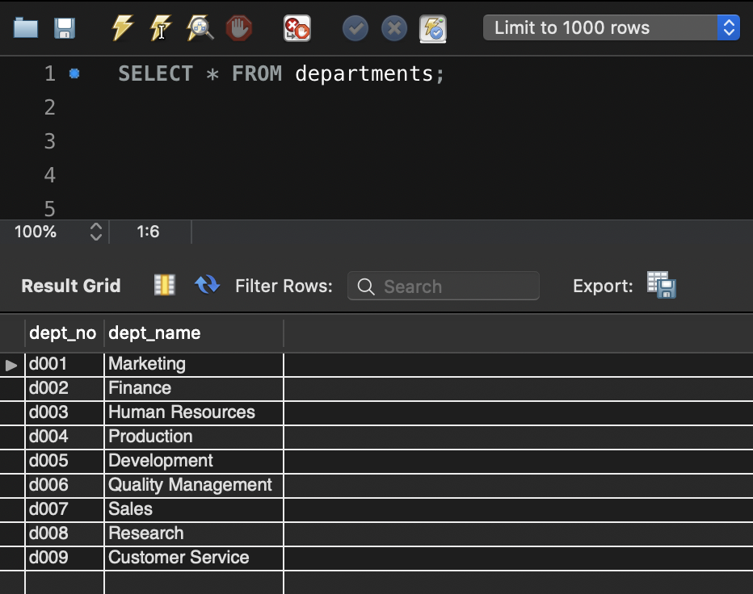
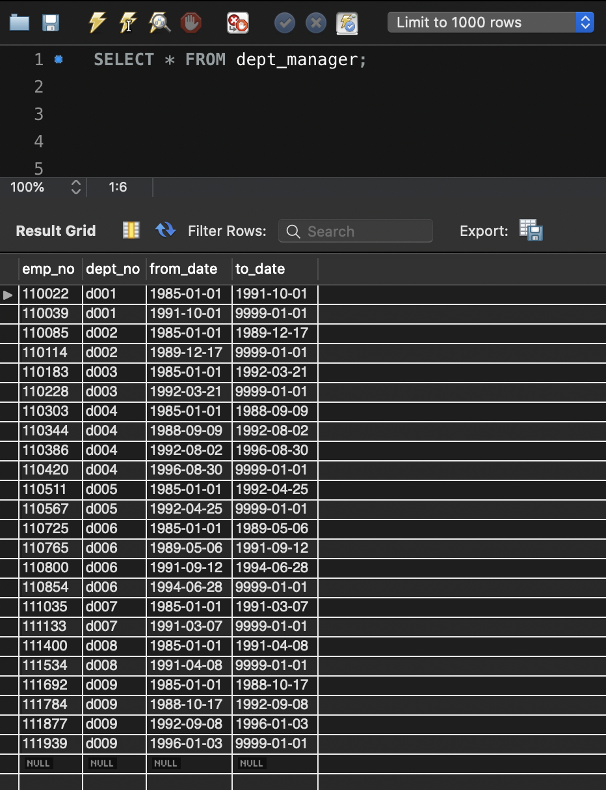
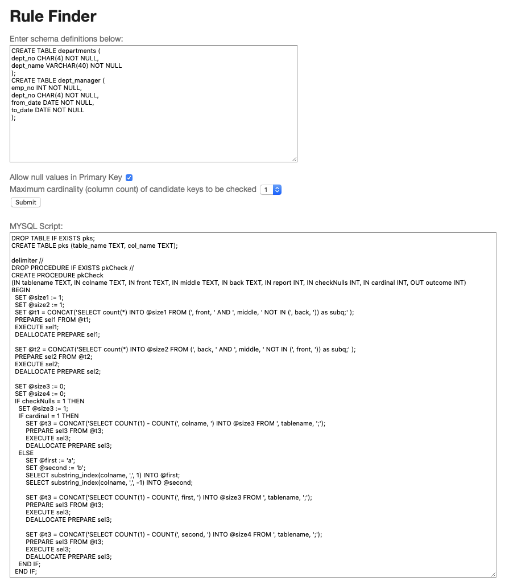
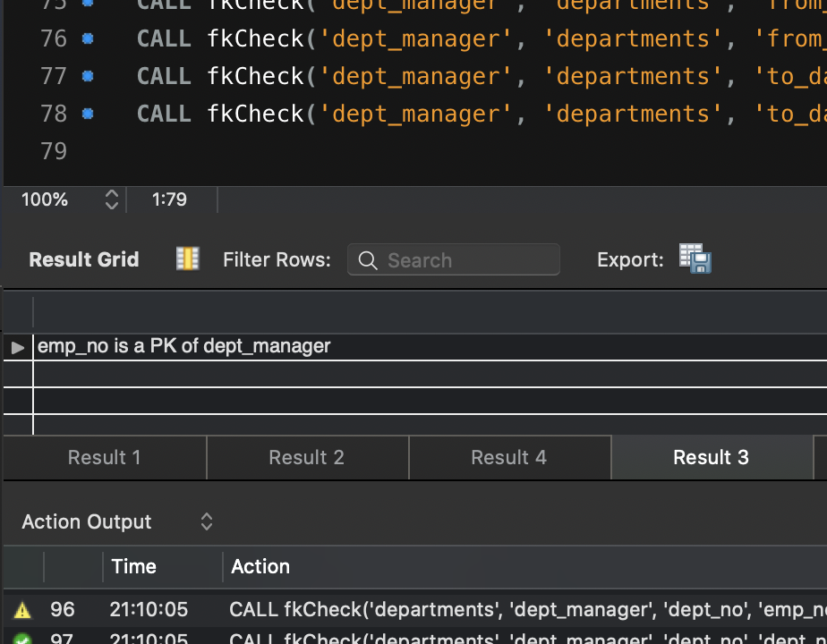
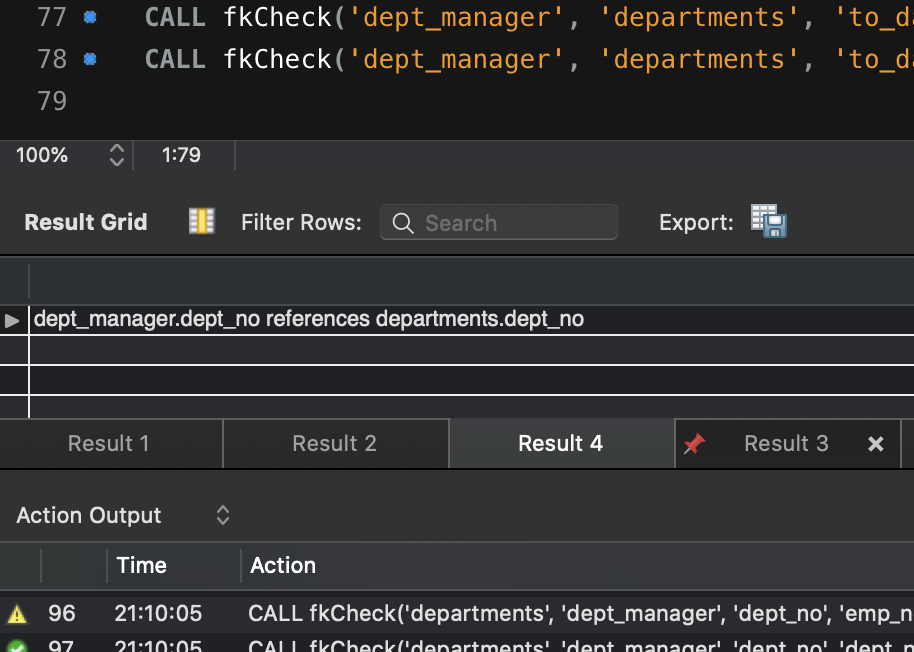
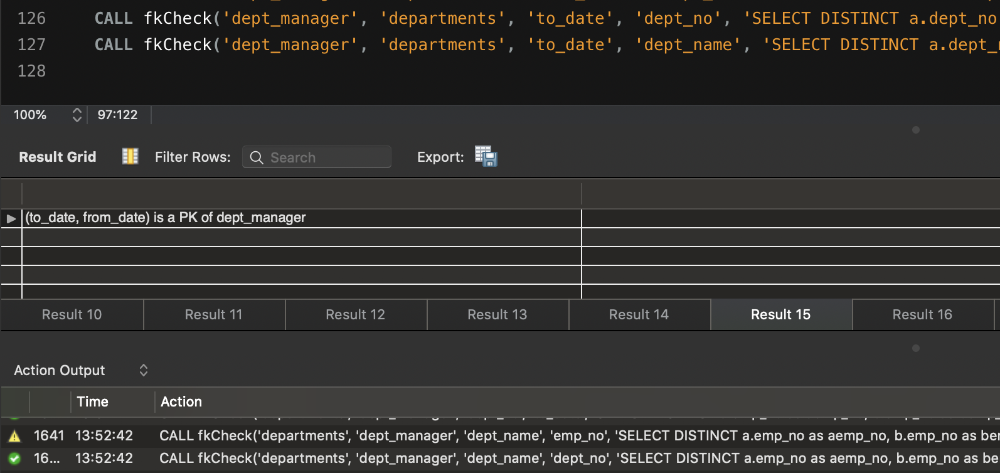

Enter schema definitions here, or
with schema definitions from the demo.
Run the script below on database.
Demo
Setting up the Database
We will be walking through an example use case with a very simple database that has a departments table and a dept_manager table.
To follow along with this demo in your own test database, download and run sample.sql
to setup the necessary tables and dump the data.
At this point, perhaps query your database to check that your results mirror those below.

As we might expect, dept_no and dept_name are each primary keys for th departments table.
More intestingly though, dept_manager.dept_no is a foreign key that references departments.dept_no.
This is because 'departments.dept_no' is a primary key of the departments table,
and for every value in dept_manager.dept_no, there exists a corresponding value in departments.dept_no.

Firstly, note that because of that last row of null values, here are technically no primary keys.
However, if weren't for that row, emp_no would in fact be a primary key.
In order to still have our program report this, we may want to relax the technical constraint and allow emp_no to be reported as a primary-key.
We will see how to configure the program to do just that.
Generating the Script

At this point we want to place our schema definitions into the first text box on this page.
Because it's what I'm using, I'll walk through the process for MySqlWorkbench, but of course, any other system works perfeclty fine.
Via the top SERVER -> Data Export, select the tables that you want to check, and choose "dump structure only".
This will hand back a .sql file with the necessary information, the contents of which you can paste into the box.
The important bits are included below. Note that in the tool at the top, clicking 'autopopulate' will automatically input these defintions into the text box.
CREATE TABLE departments (
dept_no CHAR(4) NOT NULL,
dept_name VARCHAR(40) NOT NULL );
CREATE TABLE dept_manager (
emp_no INT NOT NULL,
dept_no CHAR(4) NOT NULL,
from_date DATE NOT NULL,
to_date DATE NOT NULL );
For the purpose of this demonstration, we will only check for simple primary keys (1 column).
Remembering the row of nulls in dept_manager, we will choose to allow null values in our primary key check.
After configuring these settings and submitting, your page should resemble the image to the right.
Running the Rulefinder and Interpreting Results
Running the output script in your rdms workbench should produce 4 results for this example.
Below are a few of the relevant findings.


As expected, emp_no was found to be a primary key of dept_manager, and dept_manager.dept_no a foreign key referencing departments.dept_no.
Reconfiguring and Rerunning

Now let's reconfigure the setting at the top of this page to check for candidate keys of size 2 (still allowing nulls in primary key checking).
Running this new script, you should see all the same results as before, and more. I encourage you to skim through all of the results, but one of
the newly produced ones is included below.
This result says that together, to_date and from_date exactly specify a dept_manager.
While a bit trickier to verify than emp_no, closely analyzing the table does reveal this to be true.
Note that while emp_no and to_date, do exactly a dept_manager, this is not reported as a
primary key. This is because primary keys are defined to be minimal, meaning that if emp_no alone is a primary key,
then emp_no + to_date is not.
This concludes the demo. You are ready to go out and try the tool with your own data!
Theory
The rule finder makes use of SQL queries to check for primary and foreign keys. For example, or each primary key k, we
generate two SQL queries, front(k) and back(k), whose difference indicates primary key violations.
For example, if our attributes are name and age and k = name, then front(k) and back(k) are:
SELECT * FROM persons AS A, persons AS B WHERE A.name = B.name
SELECT * FROM persons AS A, persons AS B WHERE A.name = B.name AND A.age = B.age
Limitations
Only mysql is supported, and only the following types are supported:
"BIGINT", "CHAR", "DATE", "DECIMAL", "INT", "INTEGER", "JSON", "LONGTEXT", "MEDIUMTEXT", "NUMERIC", "SMALLINT", "TEXT", "TIME", "TIMESTAMP", "TINYINT", "TINYTEXT", "VARCHAR"